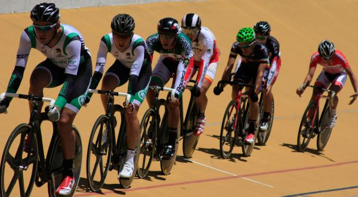
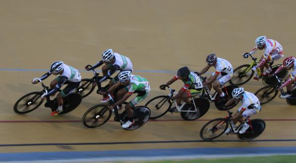
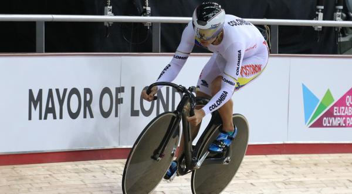

El Nacional de pista se correrá en agosto y el Grand Prix de mayo se hará en Cali

Redacción: Federación Colombiana de Ciclismo | 28/04/2016
La Federación Colombiana de Ciclismo informa a todos los interesados, que el Campeonato Nacional de pista élite, programado en primera instancia para el mes de julio, se disputará del 21 al 24 de agosto en las instalaciones del velódromo Martín Emilio ‘Cochise’ Rodríguez, de Medellín.
En la capital del departamento de Antioquia se darán cita los mejores pisteros del país, con el objetivo no solo de conquistar el podio, sino de disputar una de las casillas en la Selección Colombia Manzana Postobón que estará presente en el Campeonato Panamericano a disputarse del 31 de agosto al 4 de septiembre.
Por su parte, en el velódromo Alcides Nieto Patiño se llevará a cabo el Grand Prix de pista, programado del 13 al 15 de mayo. El evento debía realizarse en Bogotá, pero debido a la falta de recursos y a posibles obras en el trazado capitalino, la liga de Ciclismo del Valle, en cabeza de Hernando Zuluaga Aristizábal, asumirá la organización del evento.
Vale destacar que el primer Grand Prix de pista a realizarse del 29 de abril al 1 de mayo, fue aplazado. La medida se tomó ya que de acuerdo al último parte de la Liga de Antioquia, la pista aún no se encuentra en condiciones para el desarrollo de las competencias.
Nueva fecha para el Grand Prix de pista Medellín 2016

Redacción: Federación Colombiana de Ciclismo | 06/04/2016
La Federación Colombiana de Ciclismo, en cabeza de su presidente Agustín Moreno Aristizábal y el gerente general, Jorge Ovidio González, informa que por solicitud de la Liga de Antioquia, el Grand Prix de pista, que debía disputarse entre el 15 y el 17 de abril, en Medellín, ha sido aplazado debido a la situación ambiental que sufre la ciudad, factor que imposibilita el uso de los escenarios de manera adecuada para la práctica deportiva.
Además de las consecuencias derivadas por el clima, también se suma el hecho de que el velódromo no ha sido entregado por el Inder de Medellín a la liga para su uso, lo cual obligó a los organizadores a postergar el evento, que ahora se disputará del 29 de abril al 1 de mayo.
El Grand Prix de pista en Medellín, apoyado por Coldeportes Nacional, abre la serie de eventos pisteros para la élite nacional, que esta temporada cuenta con un calendario de cinco eventos (Medellín, Bogotá, Cali, Pereira y Bucaramanga) entre abril y octubre, sin contar el Campeonato Nacional de la especialidad que se llevará a cabo del 7 al 10 de julio, en Cali.
La pista suma un nuevo cupo a los Juegos Olímpicos Río de Janeiro 2016
Redacción: Federación Colombiana de Ciclismo | 15/03/2016
La Unión Ciclista Internacional (UCI) confirmó un cupo más para Colombia en la modalidad de pista, que ahora dispone de seis plazas para disputar los Juegos Olímpicos de Río de Janeiro en las especialidades de velocidad individual (damas y varones), keirin (damas y varones) y ómnium masculino.
La notificación del ente rector del ciclismo mundial favoreció a la velocidad individual masculina, que hasta entonces solo contaba con la puntuación olímpica de Fabián Puerta, tercero en el escalafón internacional con 822 puntos.
Por América los representantes en la velocidad individual serán Colombia y Trinidad y Tobago, que solo contará con un representante en las olimpiadas. Por tanto, al no tener más corredores con puntuación olímpica, el país pudo disponer de una nueva casilla.
“Quedaban nueve cupos sueltos para entrar en las pruebas individuales. Esos cupos son cinco de Europa, dos de Asia, dos de Oceanía, dos de América y uno de África. Pero la condición es que ninguno de estos corredores podía estar en el equipo de velocidad y además un Comité Olímpico no puede tener más de dos corredores en esas pruebas. Entonces todos los clasificados con el equipo de velocidad ya no pueden entrar ahí (en las pruebas individuales)”, explicó Jhon Jaime González, seleccionador nacional encargado de la preparación de los velocistas.
Además, los equipos de velocidad femenina y persecución masculina cuentan con una plaza de reserva que podría utilizarse en caso de que alguno de los países clasificados desista o no confirme su participación en las justas deportivas más importantes del planeta.
El plazo máximo establecido para confirmar la participación ante la UCI será el 28 de marzo.
El número de ciclistas clasificados por Colombia ascendió a 12 (seis en pista, cinco en ruta y uno en MTB) a la espera del cierre clasificatorio del BMX, que aportará como mínimo dos atletas a la delegación colombiana.